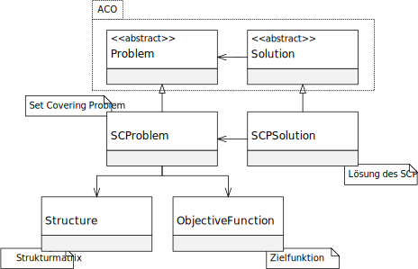

程序包 eu.andredick.scp
类 ObjectiveFunction
java.lang.Object
eu.andredick.scp.ObjectiveFunction
集合覆盖问题的目标函数
SCP 的目标函数是所有加权决策变量的总和.
第2.3章，第17页，设置覆盖问题（SCP）.
c_j权重（也是成本、系数）被明确分配给SCP的子集j.
决策变量在 SCP 的解中 (
因此，目标函数由权重 (
它通过权重 (
SCP 的目标函数是所有加权决策变量的总和.
第2.3章，第17页，设置覆盖问题（SCP）.
c_j权重（也是成本、系数）被明确分配给SCP的子集j.
决策变量在 SCP 的解中 (
SCPSolution) 明确定义.因此，目标函数由权重 (
weights) 和规则 (getValue(SCPSolution))组成,它通过权重 (
weights) 和变量特征 (SCPSolution) 计算目标函数的值.
-
字段概要
字段 -
构造器概要
构造器 -
方法概要
修饰符和类型方法说明floatgetValue(SCPSolution solution) float[]返回权重数组private voidinitRandomWeights(int size) 启动随机系数voidprint()打印
-
字段详细资料
-
weights
权重（包括成本、系数）
权重c_j的索引j对应于决策变量x_j的索引
-
-
构造器详细资料
-
ObjectiveFunction
具有随机权重启动的构造函数- 参数:
size- 决策变量数 = SCP 的子集数
-
ObjectiveFunction
构造函数
取给定的权重- 参数:
weights- 权重
-
-
方法详细资料
-
getValue
- 参数:
solution- SCP 解的实例- 返回:
- 目标函数值
-
getWeights
返回权重数组- 返回:
- 权重数组
-
initRandomWeights
启动随机系数- 参数:
size- 决策变量数
-
print
打印
-